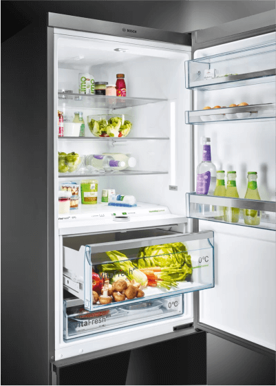

Serie | 4 Холодильник с нижней морозильной камерой 203 x 60 cm Белый
KGN39VW2AR
Защищает замороженные продукты от размораживания.
Когда мы кладём продукты в морозильную камеру, температура в ней повышается, что может привести к размораживанию и потере вкуса. Функция SuperFreezing обеспечивает быстрое замораживание новых продуктов, предотвращая размораживание содержимого морозильной камеры. Холодильники с функцией автоматического замораживания возвращаются в нормальный режим работы при достижении необходимой температуры, предотвращая расходование энергии впустую. В результате замороженные продукты сохраняют свой вкус даже при добавлении новых продуктов.
Надёжный заслон тёплому воздуху.
При открывании холодильника проникает тёплый воздух, способный испортить находящиеся внутри продукты. Для их защиты активизируется функция SuperCool и температура в холодильнике быстро понижается. Функция SuperCool также обеспечивает более быстрое охлаждение только что поставленных продуктов. Температура понижается нажатием кнопки (не ниже 2 °C). Чтобы избежать лишних затрат электроэнергии, эта функция автоматически выключается примерно через шесть часов. Функция Supercool сохраняет свежесть старых и новых продуктов с помощью разумного прогнозирования.
Свежесть с верхней до нижней полки.
Когда мы кладём продукты в морозильную камеру, температура в ней повышается, что может привести к размораживанию и потере вкуса. Функция SuperFreezing обеспечивает быстрое замораживание новых продуктов, предотвращая размораживание содержимого морозильной камеры. Холодильники с функцией автоматического замораживания возвращаются в нормальный режим работы при достижении необходимой температуры, предотвращая расходование энергии впустую. В результате замороженные продукты сохраняют свой вкус даже при добавлении новых продуктов.
FreshSense: климат контроль Вашего холодильника.
Постоянная температура в интерьере холодильника - решающий фактор в достижении длительного срока хранения продуктов. Датчики FreshSense постоянно контролируют и поддерживают температуру в холодильном и морозильном отделениях.

Два контура охлождения для более точного охлаждения.
Благодаря простому управлению и 2 конторному охлаждению есть возможность регулировать температару с максимальной точностью без потери в эффективности охлождения.
Забудьте про разморозку холодильника.
Разморозка холодильника вручную может оказаться делом малоприятным и отнимающим массу времени. Благодаря нашим новым холодильникам с системой NoFrost вы сможете навсегда забыть про разморозку. В отличие от обычных холодильников содержащаяся в воздухе влага у холодильника NoFrost постоянно накапливается в центральном охладителе, который автоматически размораживается через определенные интервалы времени. Образующийся конденсат выводится из холодильника через трубку наружу в поддон, где затем испаряется. Таким образом, система NoFrost защищает холодильник не только от обледенения, но и избавляет от необходимости размораживать его вручную. Вместо разморозки лучше полакомиться мороженым.

Продукты в ярком свете.
Светодиодная подсветка привносит в холодильник Bosch VitaFresh совершенно новую концепцию освещения, гарантируя равномерное освещение всего пространства без бликов. Светодиодные лампы потребляют меньше электроэнергии, чем обычные лампы накаливания, и служат в течение всего срока службы прибора.
Отделения VitaFresh помогают дольше сохранить свежими ваши продукты.
Мало купить продукты, нужно еще сохранить их свежесть. Отделения VitaFresh помогают дольше сохранить свежими ваши продукты. Изолированное хранение предотвращает смешивание запахов. Большой ящик – влажная зона – специально предназначен для хранения фруктов и овощей. В ящике можно установить один из двух уровней влажности для оптимального сохранения полезных свойств продуктов. Здоровая пища каждый день! Теперь это просто.
Пусть ваш холодильник пахнет свежестью.
От холодильников мы ожидаем сохранения свежести продуктов, но иногда они источают не очень приятный аромат. Фильтр Airfresh с антибактериальной защитой antiBacteria активно нейтрализует запахи вн утри холодильника и отфильтровывает бактерии. Он встроен в систему вентиляции и препятствует смешиванию запахов, чтобы продукты сохраняли свой естественный вкус. Этот фильтр обеспечивает постоянную свежесть в течение всего срока службы холодильника. Предупреждающий сигнал со звуком или светом, когда дверь не закрыта или возникнавении другой ошибки.